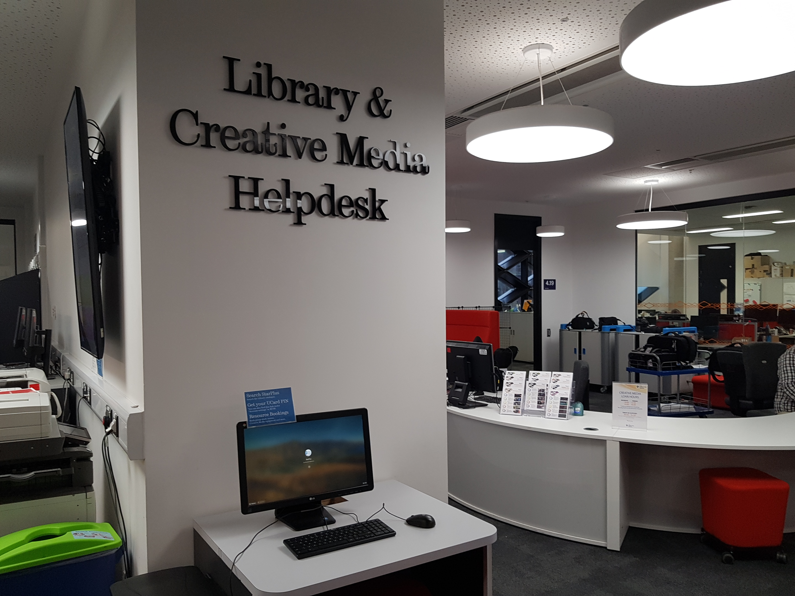

Areas Available to Students

Flexispace
The flexispace is an area where students can study how they like. It doesn't have the same noise restrictions as the silent study spaces do. This makes it better suited to working in groups, especially since you can arrange the tables in any formation you like. It is located in the centre of the top floor, giving it good access to all the other facilities on the floor.
Silent Study Areas
The are many silent study areas on the top floor of the Diamond. These provide a large volume of students with a place to get work done in peace and quiet. These spaces have a combination of computers and desk space, making them very useful for practically all types of study.
Group Study Rooms
The top floor has many group study rooms to work in. These have to be booked in order to be used, this can be done either through the iSheffield app or MUSE. This can be done up to 2 days in advance, and the rooms tend to go very fast so it's best to book as quickly as possible. These rooms have a large meeting style table and a large screen on one wall at the end. Ports are available to plug in a laptop to the screen for presenting or just showing something to the group.
Media Booths

The Diamond has a range of different creative media facilities that are available for any student to book out and use. There are edit suite workstations where students get to use a high spec computer equipped for video editing, audio editing, image editing, screencasting and animation in a room with many stations. As well as this, there are media booths which are small editing rooms that can be booked which have high spec computers equipped for all the same as the workstations, but also are capable of audio recording. There is also a podcast studio and a TV studio. All these can be booked using the iSheffield App or MUSE.
Laptop Loan Lockers
Students can loan out laptops using their Ucard and pin from a large set of lockers next to the CICS helpdesk. They can be kept for up to 24 hours but cannot be taken out of the building. Each laptop comes with a charger in a packet which also must not leave the bulding. When returning the laptops, they must be plugged in to the charger inside of the locker so it can detect that the laptop has been returned. The student is liable for the laptop they take out and if it is damaged must pay for its repair/replacement.
Library and CICS Helpdesk

The Library and CICS Helpdesk is staffed from Monday to Thursday 09:00 - 17:00, and on Friday 10:00-17:00. Where support is available from Library and CiCS staff (including Creative Media technicians).